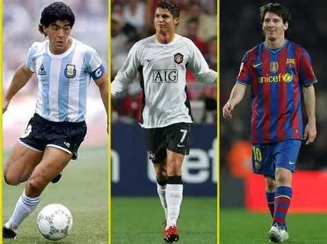

G.O.A.T.-status
Tällä sivustolla opimme maailman parhaista jalkapalloilijoista, ja syistä sen taustalla, miksi heitä pidetään maailman parhaina.

Mikä on G.O.A.T.?
G.O.A.T. eli kaikkien aikojen paras. Käytetään ylistyksenä urheilussa ja musiikissa – esim. "Messi on GOAT".
Sanaleikki perustuu siihen, että goat tarkoittaa myös vuohta, minkä takia siihen liitetään usein 🐐-emoji.
Termi levisi laajempaan käyttöön hiphopin kautta (LL Cool J:n albumi "G.O.A.T." vuodelta 2000 ja Muhammad Alin lempinimi ovat tunnetuimpia varhaisia esiintymiä).
G.O.A.T.-termi Wikipediassa (eng)
In sports culture, fans, commentators and participants have engaged in discussions regarding a
sport's
greatest of all time, often referred to by the abbreviation GOAT. The origins of the term as an
acronym with
positive connotations is often credited to the mid-20th century boxer Muhammad Ali. Its ubiquitous
usage in
sports conversations and debates was popularized in the 21st century.
Lähde: GOAT (sports culture) (avautuu uuteen välilehteen), Wikipedia (CC BY-SA 4.0)
Sivustolla käytettyä sanastoa
- G.O.A.T.
- Lyhenne sanoista Greatest Of All Time, kaikkien aikojen paras.
- Kultainen pallo
- Ranskalaisen France Football -lehden vuosittain jakama palkinto maailman parhaalle jalkapalloilijalle. Tunnetaan myös nimellä Ballon d'Or
- Serie A
- Italian pääsarja. 1980- ja 1990-luvuilla sitä pidettiin maailman kovatasoisimpana liigana.
- Maalia per ottelu
- Tehtyjen maalien määrä jaettuna otteluiden määrällä. Mittari suosii pelaajaa, jonka ura on lyhyempi mutta tehokkaampi.
Kuuntele
Etusivu tekijän lukemana (2 min 32 s)
Kysyttävää?
Kysy lisää sähköpostitse: setaroope@gmail.com